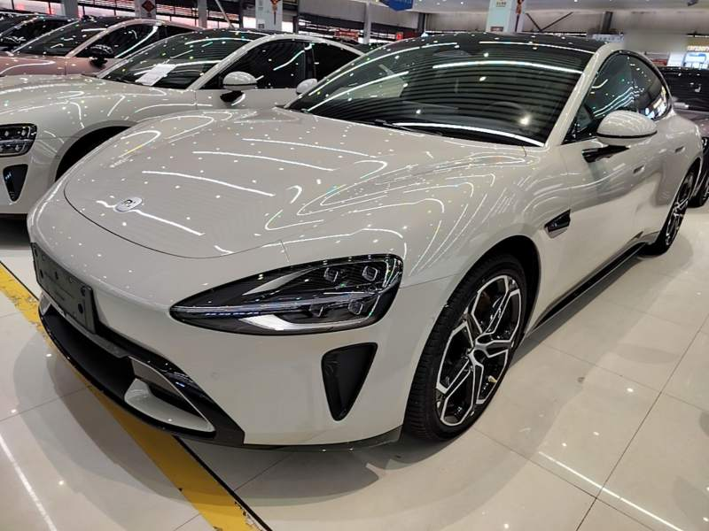

0Wejście — kto i po co
Segment dobrane
S1 Technologiczny
Mężczyzna 28–42, zna Xiaomi z telefonu, ogląda testy na YouTube. Chce auta, którego nie ma nikt na osiedlu — i chce o nim opowiadać.
Moment zakupowy (CEP) dobrane
- Wszędzie słychać o chińskich autach„Ciągle widzę chińskie auta w testach i na ulicach — chcę sprawdzić, czy to coś warte.”blokuje: stereotyp taniej chińszczyzny
- Pierwszy elektryk w życiu„Założyłem fotowoltaikę i pierwszy raz liczę, czy elektryk mi się opłaca — chińskie wychodzą w moim budżecie.”blokuje: lęki wokół EV: bateria, pożar, co po 10 latach
Obawy po drodze
- Co powiedzą znajomi
- Kupuję auto, którego nie widziałem
- Gdzie to serwisować
- Czy będzie po polsku
Psychologia kategorii
ryzyko 0.85 · lęk przed stratą 0.75 · impuls 0.1 — decyzja z dowodami
→
1Reklama — komunikat wejściowy
China SelectSponsorowane · Meta Reels / Stories — video

Xiaomi zrobiło samochód. My go sprowadzamy.
Xiaomi Auto SU7 2024Zobacz
Komunikat dobrane
strategia v1.1, grupa S1 (dosłownie)
Nośniki dobrane
- Meta Reels / Stories — videokreacja: video · cel: zasięg i pula remarketingowa · CPM / ThruPlay
- Google Search — reklama tekstowakreacja: tekst · cel: przechwycenie popytu · CPC
UTM (wejście do LP)
?utm_source=meta&utm_medium=paid_social&utm_campaign=s1_technologiczny_karta_auta_xiaomi_su7&utm_content=video_karta_auta?utm_source=google&utm_medium=cpc&utm_campaign=s1_technologiczny_karta_auta_xiaomi_su7&utm_content=tekst_karta_auta
→
2LP — Karta auta
Hasło reklamy = tytuł pierwszego ekranu LP.
9 modułów · pól do potwierdzenia [X]: 13
→
3Po kliknięciu
- 1Formularz „Zapytaj o ofertę” — telefon i e-mail wymagane, zgoda na kontakt automatycznyzdarzenie: lead_form_submit
- 2CRM — lead z polami: grupa · model · kreacja · wariantUTM z kolumny 1 → pola leada
- 3Rinvo dzwoni do 5 minut — kwalifikacjazdarzenie: call_connected → lead_qualified
- 4Konsultant — dobór i oferta pod kluczzdarzenie: offer_sent
Ciepły lead (bez telefonu)
„Wyślij mi pełny koszt i raport tego auta” → mail z raportem → powrót na LP